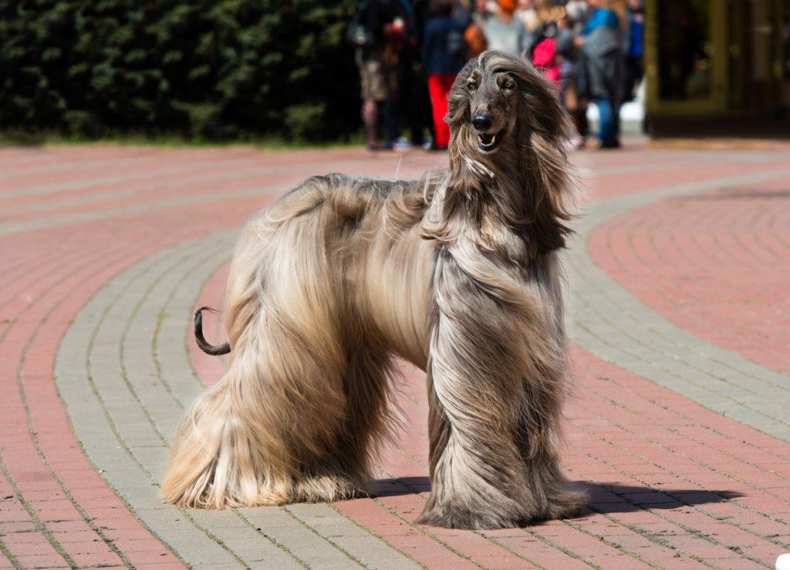

Afgán Agár
Kecses megjelenés
Selymes, hosszú szőr, dinamikus alkat, méltóságteljes kifejezés – az afgán agár kétségtelenül lenyűgöző látványt nyújt. A kanok max. 74 cm-es marmagasságúak, a szukák kb. a 69 cm-t érik el, míg max. 30 kg-ot nyomnak. A hosszú bunda, amely már elődeiket is megvédte a hideg hegyi levegőtől, vastag, selymes szőrből áll és a standard szerint minden színben előfordulhat.
Az erőteljes személyiségű kutyák nevelése
Az afgán agár nevelése olyan szakértő kezébe való, aki örül egy nagyon jellemerős állati partnernek. Mivel vadászként a fajta képviselői nem igazán törekednek arra, hogy engedelmeskedjenek gazdájuknak, hanem inkább az önálló cselekvéshez szoktak hozzá az alárendeltség helyett. Ennek ellenére megtaníthatja agarát alapvető engedelmességre, csak sok türelemre és világos, konzekvens vezetésre lesz szükség hozzá. A keménykezűséget nem jól viseli az érzékeny eb – a büszke állatokat inkább gyanakvóvá és félénkké teszi, ezért soha nem szabad opcióként tekinteni erre a bánásmódra.